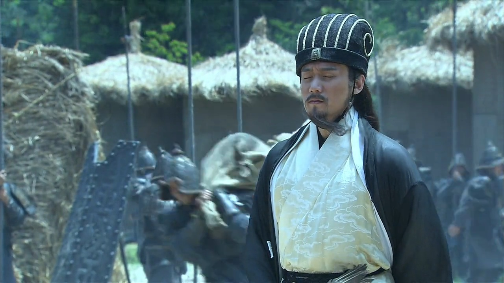
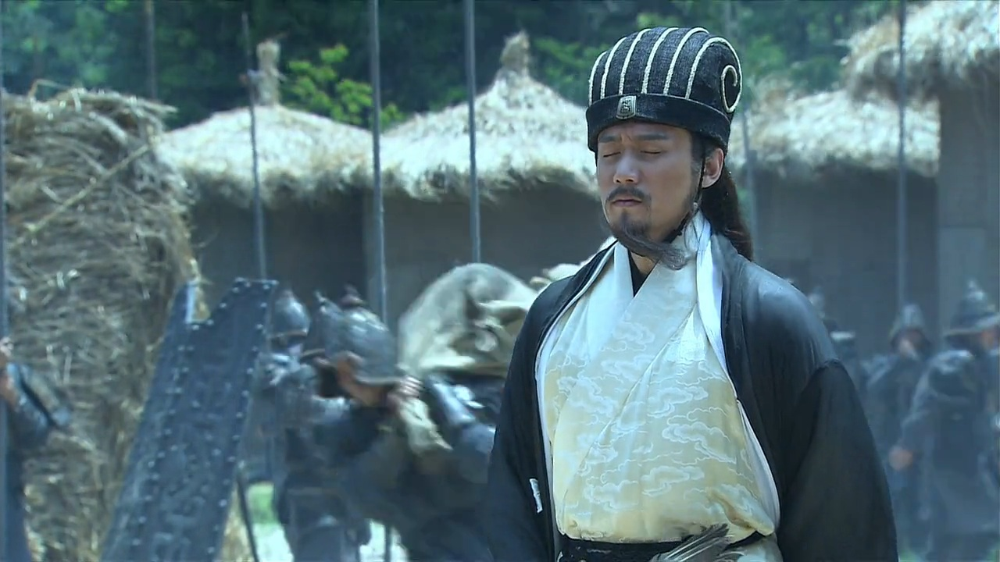
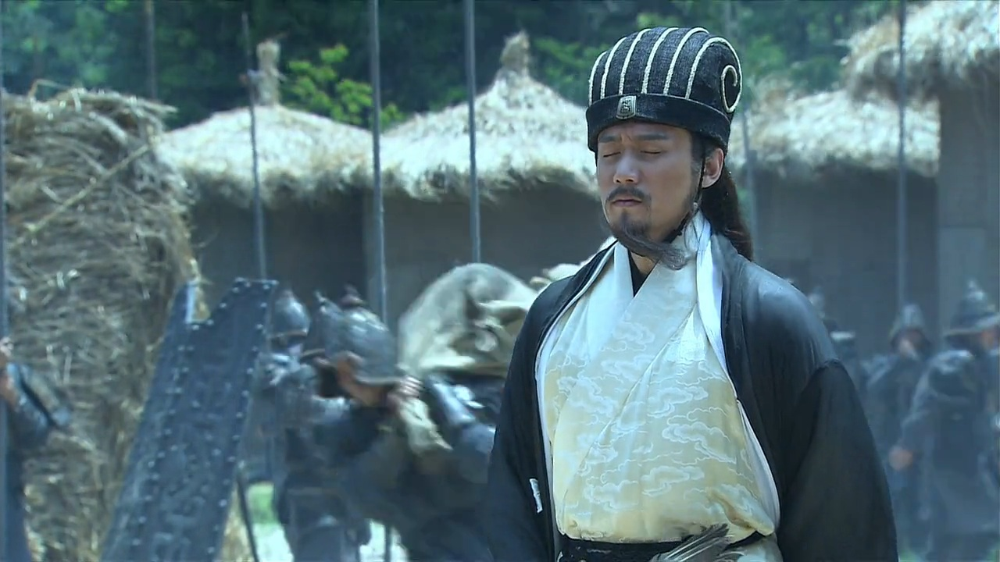
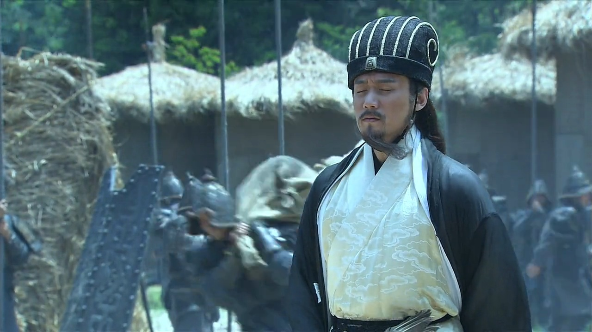

دورهٔ سه پادشاهی چین (۱۸۴–۲۸۰ م) دورهای از آشوب و تجزیه پس از فروپاشی سلسله هان شرقی بود که با شورشهای داخلی، فساد دربار و قدرتگیری جنگسالاران آغاز شد. این دوره با ظهور سه دولت اصلی شکل گرفت: وی به رهبری کائو کائو و سپس پسرش کائو پی با پایتخت لویانگ و کنترل شمال چین، که توانست سلسله هان را منقرض کند؛ شو به رهبری لیو بی و وزیر نامدارش ژوگه لیانگ با پایتخت چنگدو و تسلط بر غرب و جنوب غربی چین، که ادعای وارثی مشروع هان را داشت و با سیاستهای ژوگه لیانگ تلاش میکرد شمال را فتح کند؛ و وو به رهبری سان چوان با پایتخت جیانیه و کنترل جنوب چین و حوضه رود یانگتسه، که نیروی دریایی قوی داشت و مرزهای جنوبی را حفظ میکرد. مهمترین نبردها شامل نبرد صخرههای سرخ (۲۰۸ م) بود که اتحاد لیو بی و سان چوان علیه کائو کائو مانع از تسلط کامل وی بر چین شد و همچنین جنگهای شمالی ژوگه لیانگ (۲۲۸–۲۳۴ م) که تلاشهای شو برای تصرف شمال را ناکام گذاشت. در این دوره رقابتهای سیاسی، خیانتها، اتحادها و خیانتهای استراتژیک به شدت رایج بود و شخصیتهایی مانند کائو کائو، لیو بی، ژوگه لیانگ و سان چوان به نمادهای هوش نظامی و قدرت سیاسی تبدیل شدند. پایان دوره با تأسیس سلسله جین توسط سیما یان در ۲۶۵ م، فتح شو در ۲۶۳ م و سقوط وو در ۲۸۰ م رقم خورد و چین دوباره یکپارچه شد. این دوره از نظر تاریخی و فرهنگی اهمیت فراوان دارد و به دلیل داستانها، استراتژیهای نظامی و رمان تاریخی «سه پادشاهی» در ادبیات، هنر، بازیهای استراتژیک و فرهنگ عامه چین و شرق آسیا همواره برجسته باقی مانده است، به طوری که مفاهیم وفاداری، هوش و خیانت از این دوره هنوز در روایتهای تاریخی و فرهنگی مورد توجه است.
قلمرو ها
shu han

قلمرو شو به رهبری لیو بی و مشاور بزرگش ژوگه لیانگ، غرب و جنوب غربی چین و منطقهٔ سیچوان را در اختیار داشت و پایتخت آن چنگدو بود. این قلمرو به دلیل موقعیت جغرافیایی کوهستانی و رودخانهای، طبیعی دفاعی مستحکم و منابع غنی غذایی و معدنی داشت که امکان مقاومت در برابر حملات شمال را فراهم میکرد. شو بهطور سنتی قلمرویی ضعیفتر از وی و وو به لحاظ جمعیت و وسعت بود، اما با استراتژیهای هوشمندانه ژوگه لیانگ، توانست برای دههها در برابر حملات وی و وو دوام بیاورد و نقش کلیدی در توازن قدرت میان سه پادشاهی ایفا کند.
cao wei

قلمرو وی به رهبری کائو کائو و سپس پسرش کائو پی، شمال چین و منطقهٔ هانژو را تحت کنترل داشت و پایتخت آن لویانگ بود. این منطقه شامل نواحی مرکزی و شمالی رودخانهٔ زرد بود و به دلیل جمعیت زیاد، زمینهای حاصلخیز و منابع اقتصادی قوی، مرکز اصلی قدرت نظامی و اداری وی محسوب میشد. وی توانست سلسله هان را منقرض کند و با تمرکز بر ارتش منظم، مالیاتبندی منسجم و استقرار فرماندهان وفادار، بر قلمروهای شمال تسلط یابد. نبردها و سیاستهای وی عمدتاً برای یکپارچه کردن شمال و مقابله با شو و وو بود و قدرت سیاسی وی الگویی برای دولتهای بعدی چین فراهم کرد.
eastern wu

قلمرو وو به رهبری سان چوان، جنوب چین و حوضهٔ رود یانگتسه را کنترل میکرد و پایتخت آن جیانیه بود. وو دارای نیروی دریایی قدرتمند و قلمرویی با مسیرهای آبی گسترده بود که تجارت و جابهجایی نیروها را تسهیل میکرد و باعث برتری استراتژیک در جنوب شد. منابع طبیعی و کشاورزی جنوب، همراه با سیستم دفاعی رودخانهای و دریایی، این دولت را قادر میساخت در مقابل حملات وی و شو مقاومت کند و نقش تعیینکنندهای در سیاستها و اتحادهای موقت دورهٔ سه پادشاهی داشته باشد. قدرت نظامی وو عمدتاً بر ناوگان دریایی و کنترل مسیرهای آبی متمرکز بود و همین امر موجب ثبات نسبی جنوب چین شد.
شخصیت ها
cao cao
کائو کائو بنیانگذار وی و یکی از بزرگترین استراتژیستها و سیاستمداران چین بود. او شمال چین و منطقه هانژو را تحت کنترل داشت و پایتخت لویانگ مرکز اصلی قدرت وی بود. کائو کائو با تمرکز بر ارتش منظم، سازماندهی مالیات و استفاده از فرماندهان وفادار، توانست شورشها را سرکوب و قلمروی شمال را تثبیت کند. او با نابودی سلسله هان و تثبیت وی، پایهگذار سلسلهای قدرتمند شد و نقش تعیینکنندهای در توازن قدرت میان سه پادشاهی داشت.
liu bei
لیو بی بنیانگذار قلمرو شو و ادعاکننده وارثی مشروع سلسله هان بود. او با وجود آغاز ضعیف از طبقهای متوسط، با استفاده از مهارتهای دیپلماتیک و ایجاد اتحادهای استراتژیک توانست قلمروی غرب و جنوب غربی چین را تحت کنترل بگیرد و پایتخت چنگدو را مرکز قدرت خود قرار دهد. لیو بی به مردم توجه ویژه داشت و با ایجاد وفاداری میان نیروهایش، حتی در شرایط دشوار سیاسی و نظامی دوام آورد. شخصیت او ترکیبی از شجاعت، حکمت و مهارت سیاسی بود و توانست شو را به عنوان یکی از سه قدرت اصلی دوره سه پادشاهی تثبیت کند.
guan yu
گوان یو فرمانده وفادار و از نزدیکترین یاران لیو بی بود که به نماد وفاداری و شجاعت تبدیل شد. او مسئولیت دفاع از مرزهای شرقی و شمالی شو را برعهده داشت و در نبردهای کلیدی مانند نبردهای شمالی علیه وی نقش مؤثری ایفا کرد. مهارت رزمی، اقتدار اخلاقی و استراتژیهای جنگی او باعث شد که حتی دشمنان نیز به او احترام بگذارند و داستانهای او در فرهنگ چین به وفاداری و شجاعت مشهور است.
zhang fei
ژانگ فی نیز از فرماندهان مهم لیو بی و همپیمان وفادار گوان یو بود. او بیشتر به دلیل شجاعت و قدرت رزمی برجسته شناخته میشد و در نبردهای میدانی نقش پیشروی و حمایت از نیروهای اصلی را بر عهده داشت. در کنار گوان یو و لیو بی، ژانگ فی ستون دفاعی و تهاجمی شو محسوب میشد و حضور او باعث حفظ ثبات نیروهای شو در نبردهای سخت شد.
sima yi
سیما یی ژنرال و مشاور ارشد وی بود که نقش مهمی در مدیریت امور داخلی، سیاست و نظامی شمال ایفا کرد. او با هوش استراتژیک، برنامهریزی دقیق و کنترل خاندان وی، قدرت وی را مستحکم کرد و در نهایت زمینه را برای تأسیس سلسله جین توسط نوهاش سیما یان فراهم ساخت. سیما یی با مهارتهای سیاسی و نظامی، به یکی از اثرگذارترین شخصیتها در تحولات پایانی دوره سه پادشاهی تبدیل شد.
lu bu
لو بو جنگسالار و رزمیکار مشهور بود که به دلیل قدرت فردی و شجاعت افسانهای شناخته میشد، اما به دلیل خیانتهای مکرر و ناپایداری سیاسی، نتوانست نقش پایدار و استراتژیک در هیچ یک از سه پادشاهی ایفا کند. او بیشتر به عنوان یک جنگجوی پرهیاهو و نماد قدرت رزمی شخصی در نبردها و داستانهای تاریخی شناخته میشود و حضورش در ادبیات و هنر چین، افسانهای و پرهیجان است.
zhuge liang
ژوگه لیانگ مشاور و استراتژیست افسانهای شو بود که نقش حیاتی در دفاع از غرب و جنوب غربی و برنامهریزی عملیاتهای نظامی داشت. او با استفاده از دیپلماسی، فریب استراتژیک و مدیریت منابع، توانست شو را برای دههها در برابر حملات وی و وو حفظ کند. ژوگه لیانگ به نماد خرد، سیاستمداری و وفاداری در تاریخ چین تبدیل شده و شهرت او در کتابها و رمانهای سه پادشاهی ماندگار است.
sun quan
سان کوان یا سون کوان فرمانده و جانشین سان چوان در وو بود. او کنترل جنوب چین و حوضه رود یانگتسه را برعهده داشت و با تمرکز بر نیروی دریایی و مسیرهای آبی، ثبات و امنیت قلمرو جنوبی را تضمین کرد. سان کوان نقش کلیدی در مقابله با شو و وی داشت و توانست با حفظ استقلال جنوب و کنترل تجارت آبی، قدرت و نفوذ وو را افزایش دهد.
zhao yun
ژائو یون فرمانده افسانهای شو و یکی از وفادارترین یاران لیو بی بود. او با شجاعت فوقالعاده و مهارت رزمی بینظیر در نبردهای دفاعی و هجومی مشارکت داشت و به ویژه در حفظ قلمرو چنگدو و پیشروی علیه نیروهای شمالی و جنوبی مؤثر بود. شهرت ژائو یون در استراتژیهای فردی، وفاداری و دلاوری باعث شد که او به شخصیتی نمادین در ادبیات و فرهنگ چین تبدیل شود.
zhou yo
ژو یو ژنرال و استراتژیست برجسته وو بود که تخصصش در نبردهای دریایی و مدیریت مسیرهای آبی جنوب بود. او با طراحی عملیاتهای دریایی، کنترل مسیرهای حیاتی و پشتیبانی از نیروهای خشکی، توانست برتری نظامی وو را حفظ کند و تهدیدهای وی و شو را مهار نماید. مهارت ژو یو در هماهنگی نیروهای دریایی و خشکی، نقش کلیدی در ثبات جنوب ایفا کرد.